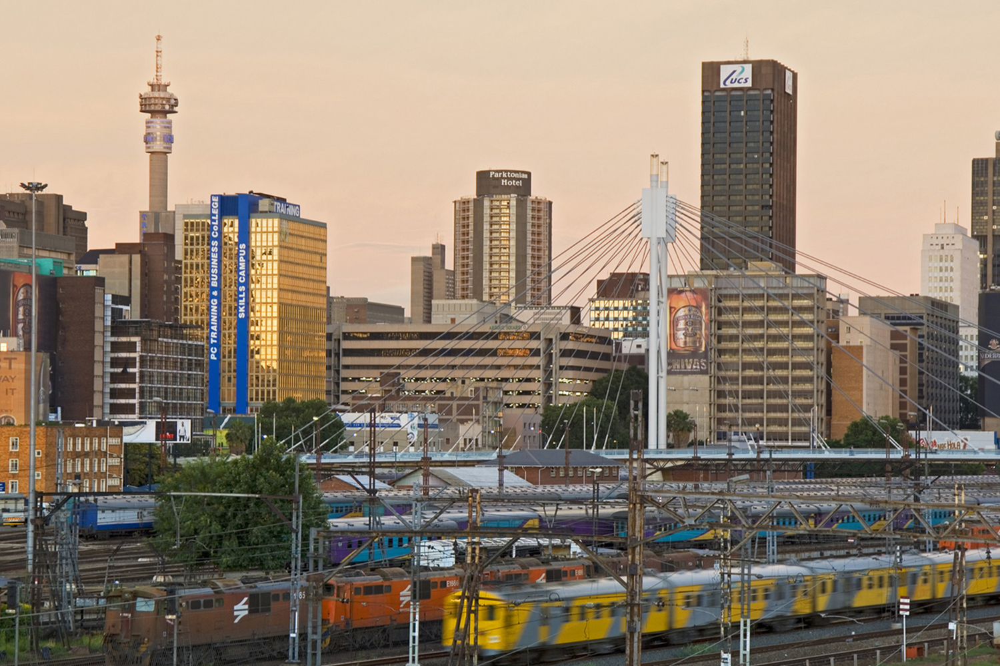
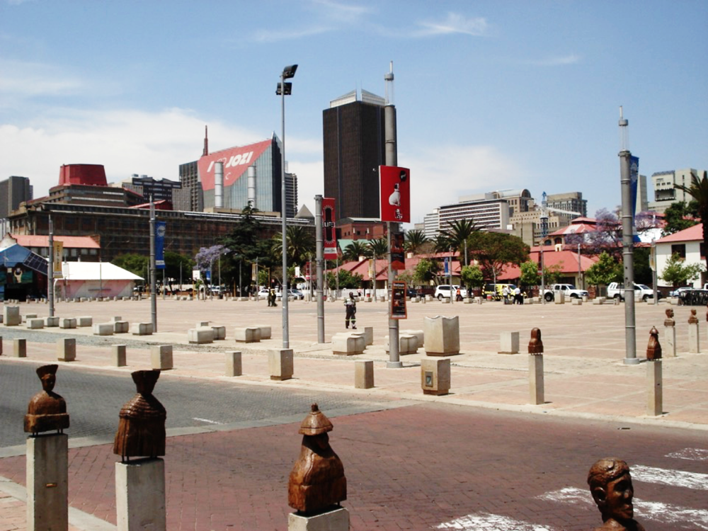
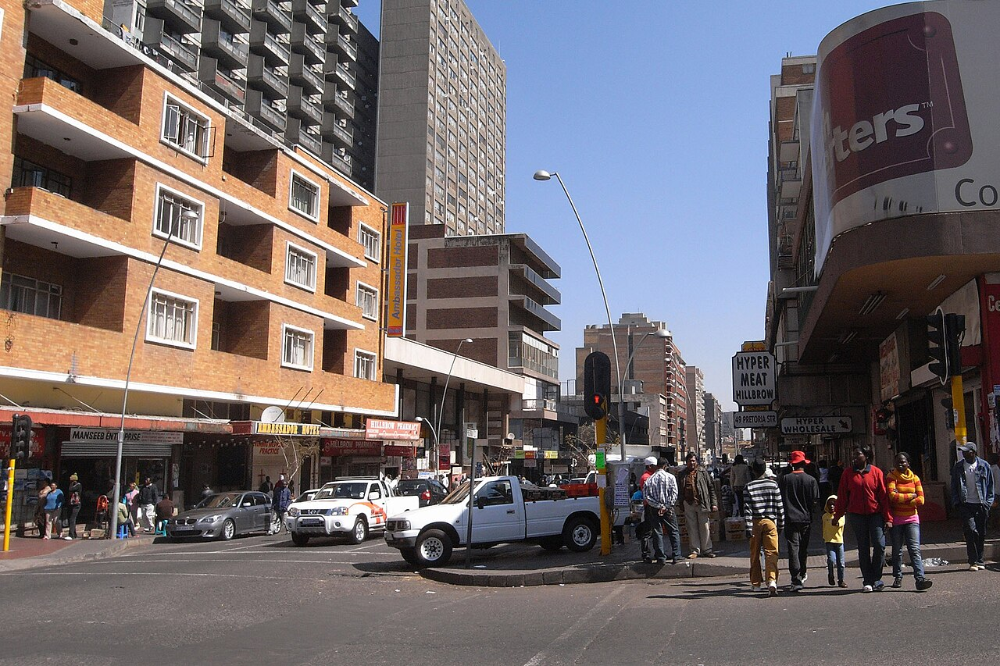
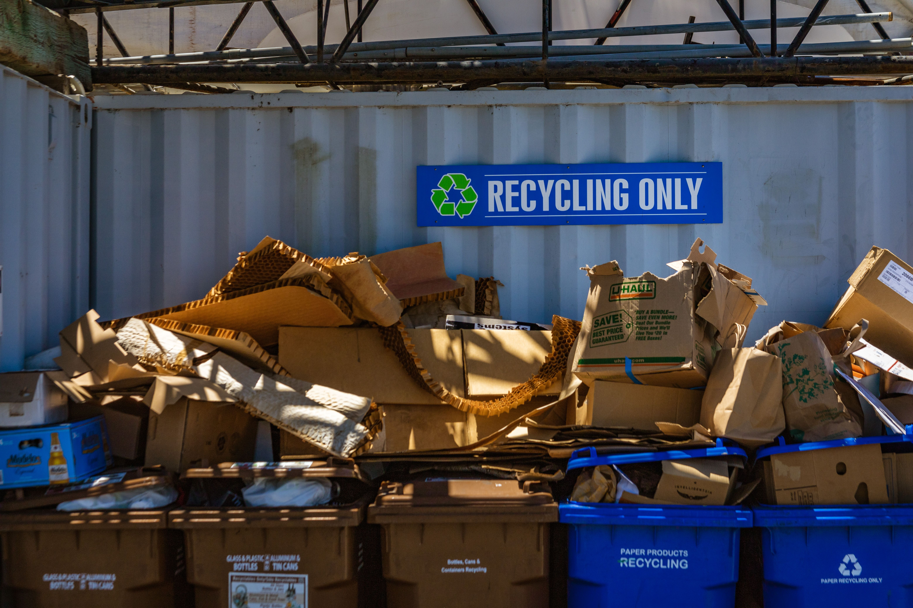
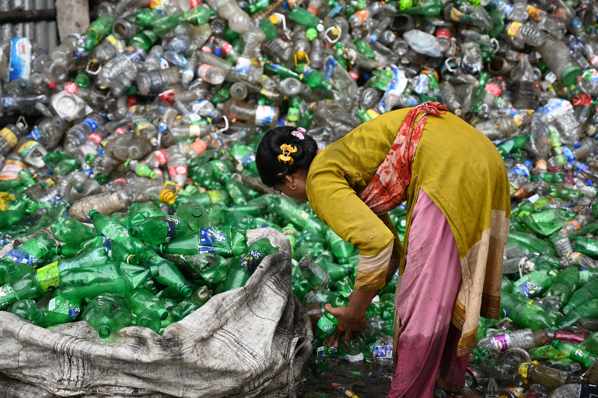
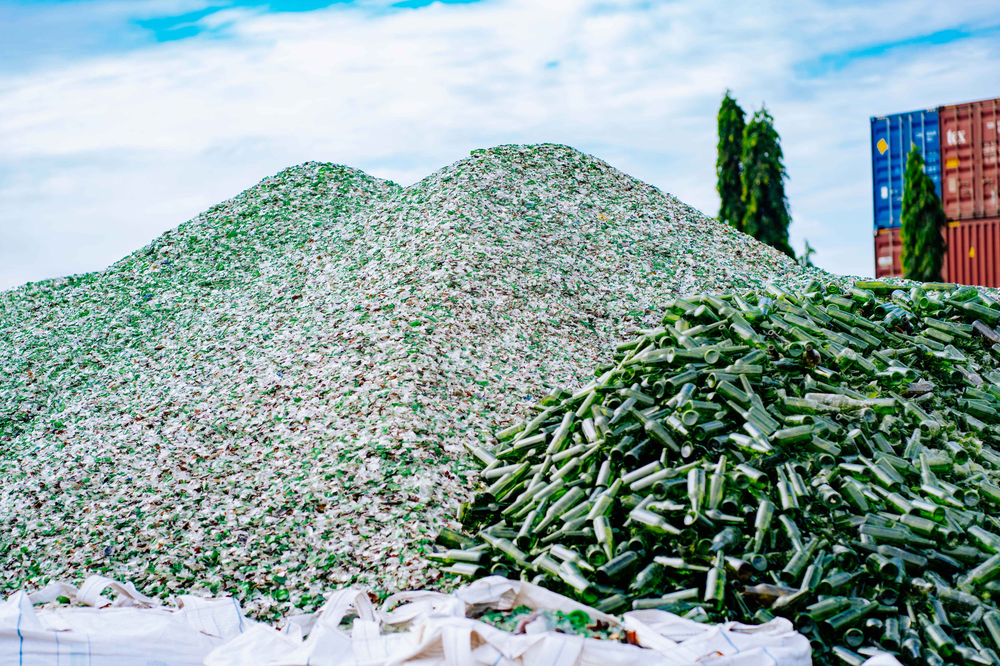
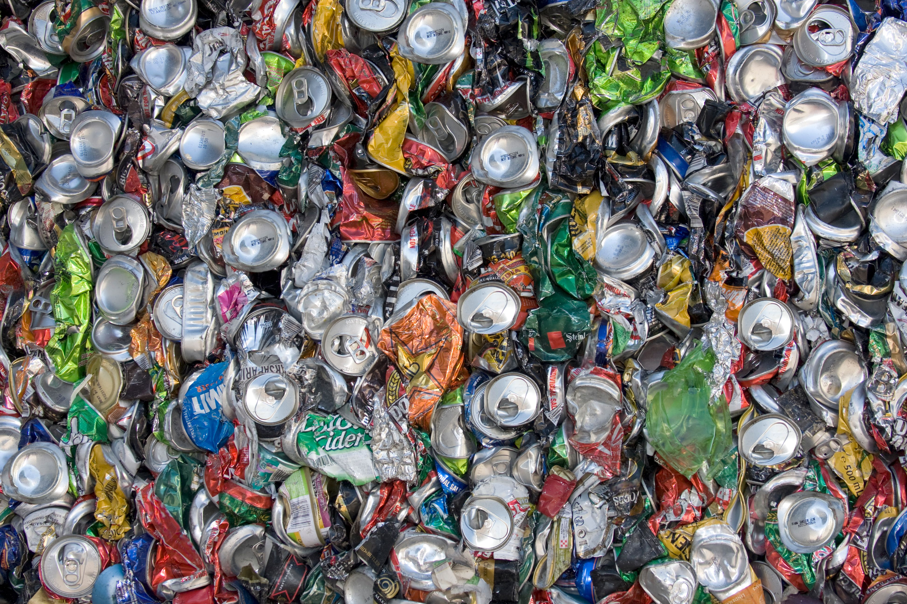

Clean City is a community-driven initiative that aims to promote sustainable practices and environmental responsibility.
We work with local residents, businesses, and organizations to reduce waste, increase recycling, and create cleaner, healthier communities.
We offer a range of programs and services to help keep our city clean and beautiful. From waste management to community clean-up events, we are dedicated to making a positive impact on our environment.
Effective waste management is crucial for maintaining a clean and healthy environment. We are committed to providing efficient and sustainable waste disposal solutions for our community. One strategy we employ is implementing comprehensive recycling programs to reduce the amount of waste sent to landfills.
Engaging the community in clean-up efforts is essential for maintaining a clean and healthy environment. We are committed to providing efficient and sustainable waste disposal solutions for our community. One strategy we employ is implementing comprehensive recycling programs to reduce the amount of waste sent to landfills.
Promoting recycling and waste reduction is crucial for environmental sustainability. We are committed to providing efficient and sustainable waste disposal solutions for our community. One strategy we employ is implementing comprehensive recycling programs to reduce the amount of waste sent to landfills.
We are proud to serve a wide range of areas in our city, providing efficient and sustainable waste management solutions to keep our community clean and healthy.



We are committed to promoting recycling and waste reduction for environmental sustainability. By recycling items such as paper, plastic, glass, and metal, we can reduce the amount of waste sent to landfills and conserve natural resources for future generations.

Recycling paper is an important step in reducing waste and conserving natural resources. By recycling paper, we can reduce the amount of waste sent to landfills, save trees, and conserve energy and water used in the production of new paper products.

Recycling plastic is essential for reducing environmental pollution and conserving natural resources. By recycling plastic, we can reduce the amount of waste sent to landfills and decrease the demand for virgin plastic production.

Recycling glass is an effective way to reduce waste and conserve natural resources. By recycling glass, we can reduce the amount of waste sent to landfills and save energy used in the production of new glass products.

Recycling metal is crucial for conserving natural resources and reducing environmental impact. By recycling metal, we can reduce the need for mining and processing raw materials, thus saving energy and reducing pollution.